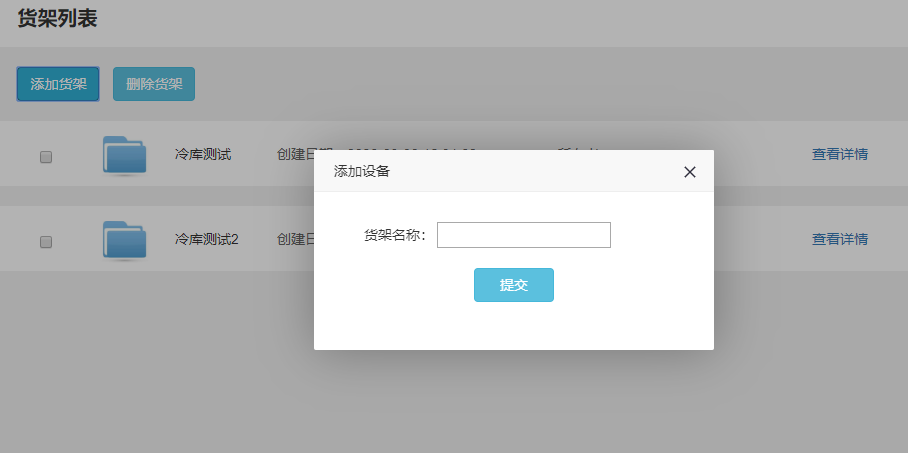
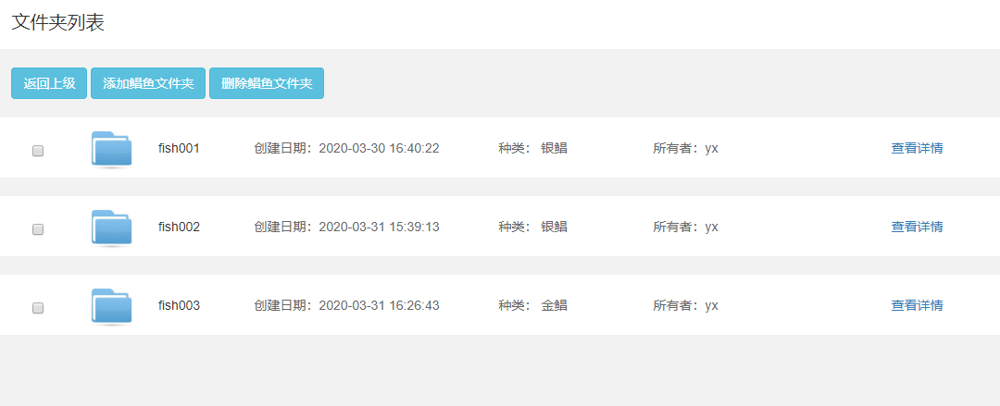
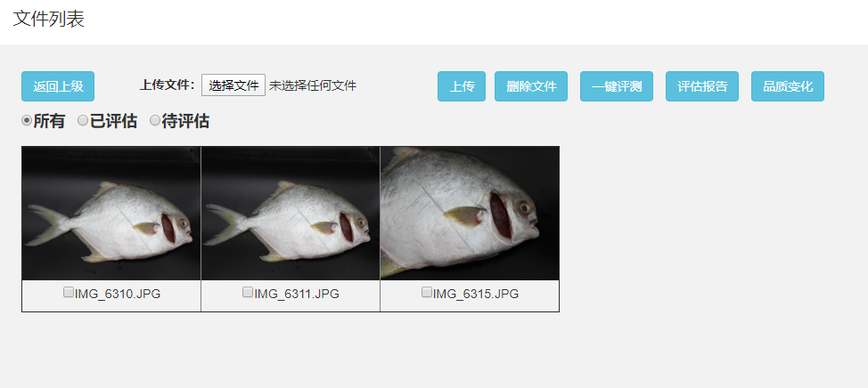
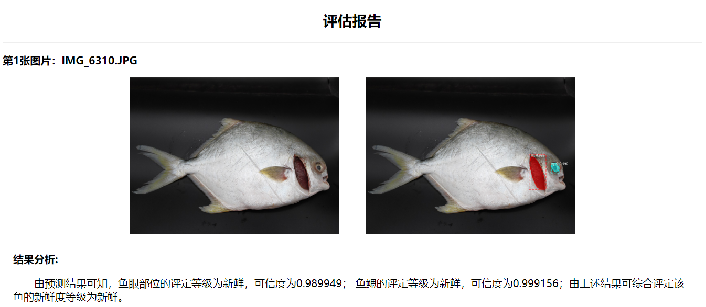
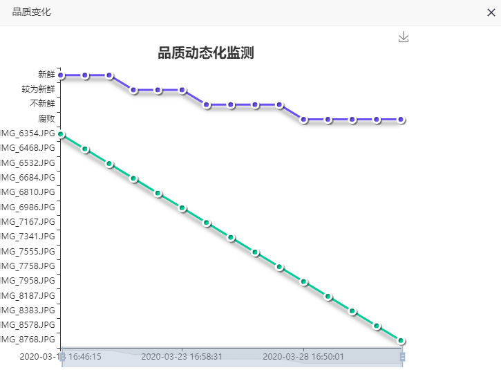

概览
为了让用户更方便快捷的实现对鲳鱼的管理评估等，我们特地开发了信息采集模块，用户可以在这里批量评测，查看评估报告，品质动态化监测等！
1.货架管理
在这里我们可以新建货架，删除货架，每个货架代表的含义为一个真实环境中的冷藏货架，每个货架上面摆放着同一种类的冰鲜水产品。

2.鲳鱼管理
每个鲳鱼货架上可摆放成百上千条鲳鱼，而鲳鱼文件夹就是分别管理每条鲳鱼，每个鲳鱼的编号即为文件夹编号，每个文件夹里的内容即为每条鲳鱼各个时间段的图片！

3.快速评测
在文件列表下，我们可以看到所有上传在该文件夹下的鲳鱼图片，我们可以继续上传图片，也可以删除存在的图片。在这里，我们还可以根据类别查看有没有需要评估的鲳鱼，如果有，则可以一键评测，将该文件夹下所有未评测文件进行评测！

4.评估报告
点击评估报告，我们可以查看该文件夹下所有已评估的文件的评估报告，查看其新鲜度。

5.品质变化
点击品质变化按钮，一键查看该鲳鱼近期新鲜度的变化。
